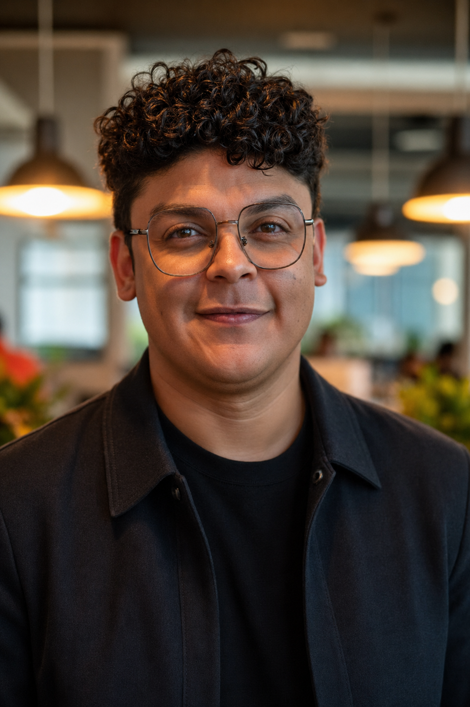

Entender antes de propor
Investigo contexto, comportamento, dúvidas recorrentes e pontos de dificuldade antes de desenhar soluções.
Sou UX/Product Designer com atuação em educação digital, arquitetura da informação, interfaces e IA aplicada. Trabalho entre pesquisa, estrutura e tecnologia para organizar fluxos, telas e processos que ajudam pessoas a entender o que fazer em seguida.

Antes de propor uma interface, procuro entender o que torna a experiência difícil: regras pouco claras, informação espalhada, decisões invisíveis, dependências entre equipes ou etapas que fazem o usuário parar no meio do caminho.
Investigo contexto, comportamento, dúvidas recorrentes e pontos de dificuldade antes de desenhar soluções.
Organizo informação, fluxos e jornadas para que decisões importantes fiquem visíveis e fáceis de seguir.
Uso IA e automação para acelerar tarefas repetitivas quando as regras, limites e objetivos já estão claros.
Minha trajetória passa por educação corporativa, sistemas públicos, AVAs e automação com IA. Em todos esses contextos, o foco foi o mesmo: entender como pessoas aprendem, trabalham e tomam decisões dentro de produtos digitais.
Na Coordenação de Formação e Aperfeiçoamento, percebi como materiais, interfaces e organização da informação podiam facilitar o aprendizado. Foi o momento em que o design deixou de ser só apresentação visual e passou a ser parte da experiência de formação.
No SERPRO, aprofundei fundamentos de UX, arquitetura da informação e design centrado no usuário em ambientes digitais de grande escala. Essa experiência me mostrou como pequenas decisões de interface podem afetar o uso de sistemas institucionais.
Na Universidade Católica de Brasília, atuei como designer instrucional e liderei o redesenho do AVA. Trabalhei com pesquisa, personas, testes e arquitetura da informação para reorganizar uma sala virtual fragmentada e ajudar o aluno a entender onde começar, o que priorizar e como avançar.
No Núcleo de Educação a Distância da Fiocruz Brasília, ampliei minha atuação para a produção educacional. Conectei UX, design instrucional e operação para mapear como cursos eram planejados, produzidos, validados e entregues.
Apliquei IA em processos manuais que consumiam tempo da equipe, como formatação de questões para o D2L e apoio à audiodescrição acessível. O foco foi transformar regras operacionais em instruções testáveis, capazes de reduzir semanas de trabalho para minutos.
Hoje estruturo uma pesquisa que integra UX, DesignOps, Design Instrucional e IA. O objetivo é apoiar equipes que precisam produzir cursos, organizar decisões, reduzir retrabalho e manter qualidade em ambientes educacionais de larga escala.
Meu diferencial está em conectar o que aparece na interface com o que sustenta a operação: pesquisa, arquitetura da informação, processos, automação e tomada de decisão.
Para mim, uma boa solução não é a mais bonita nem a mais tecnológica. É a que reduz esforço, organiza a informação e ajuda cada pessoa a saber o que fazer em seguida.
Atuo em produtos digitais, educação, AVAs e automação de processos com regras bem definidas.